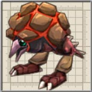
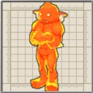
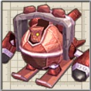

| 名前 |
画像 |
レベル |
HP |
フード |
メモ |
| あかじぇりー |
 |
9 |
2679 |
キャンディー |
マグマを固めずに冷やす実験で生まれた突然変異種。焼けたゴムの匂いがする。 |
| ふぁいやこぼると |
|
9 |
1786 |
キャンディー |
炎を完全に防ぐ耐火服を着込んだこぼると。スパナ攻撃はなかなかの威力。
コボレンジャーの隊員で、アウロン大鉄塔では怪しげな研究の数々を行っている様子。 |
| あーけろん |
 |
11 |
2868 |
七草かゆ |
危害を加えると膨張し最終的に大爆発する大亀。攻撃しなければ無害。
無害といいつつ体当たり攻撃があるので注意です。 |
| おーが |
|
9 |
1786 |
キャンディー |
棍棒を振り回す力自慢の魔族。攻撃をはじいて反撃してくる事も。
前作にも同名のキャラが登場しますが、グラフィックがが異なります。。 |
| ふれいむ |
 |
10 |
2290 |
どら焼き |
火を司る精霊の結晶体。主食はロウソクの火。 |
| ころにー |
 |
10 |
2290 |
どら焼き |
中に火球が溜まった生物。カサカサと素早く動き、時折中身を噴出する。
凍らない、スタンしないという対処に困るモンスターです。 |
| おおぐちぼや |
 |
10 |
2290 |
どら焼き |
巨大な口で吸い寄せ、逃げられないようにしてから弾丸を放つ、狡猾な生物。 |
| いふりーと |
 |
11 |
5737 |
七草かゆ |
炎が集まり生まれた魔神。火炎弾とワープ移動で敵を翻弄する。
前作に同名のは虫類のキャラクターが登場します。 |
| ひのとり |
 |
11 |
2868 |
七草かゆ |
かの『火焔鳥』の亜種。大ダメージを受けると逃げ出すチキンハート。
チキンハートとの馬鹿にしてはいけません。かの『火焔鳥』もダメージを受けると逃げ出していました。 |
| すたんぴーど |
 |
13 |
4255 |
アジの開き |
蒸気機関で走る鉄巨人。鉄壁のボディで突進攻撃を行う。 |
| おおあかじぇりー |
|
11 |
5737 |
どら焼き |
何匹ものあかじぇりーが合体してできたもの。重力に反して素早い。
倒すと大量のあかじぇりーが出てきます。 |
| ぐれーところにー |
 |
12 |
10567 |
なし |
火の結晶体を中に入れて巨大化した。攻撃すると巨大な火の玉を噴き出す。 |
| おおひのとり |
 |
16 |
20837 |
なし |
伝説の火焔鳥を目指して激太りしたひのとり。性格が凶暴に。
果たしてこいつで常温核融合はできるのでしょうか? |
| ファブニール |
|
12 |
38748 |
なし |
高位魔法を使役する火竜。飛ぶだけで凄まじい蒸気を発し、地上を焼き尽くす。 |
| フェニックス |
|
40 |
100381 |
なし |
『火焔鳥』の名に恥じぬ姿を持つ魔鳥。火の雨で現世を地獄と化す。
「Zwei!!」の「ケノーピ火山」のボスでした。前作と違いHPが少なくなっても逃げなくなりました。ステータスは高くなっていますが、攻撃方法が変わっていないので、前回と大きな違いはないでしょう。 |
| センチネル |
|
50 |
164004 |
(チェックスカート) |
魔法大戦時に人間が造った戦闘人形。町一つを簡単に滅ぼす火力を積んでいる。
「Zwei!!」の「ケノーピ火山：夢幻迷宮」のボスです。攻撃パターンは減っていますし、「ZWEI II」の魔法は扱いやすいものが多く、なおかつアンチボムのおかげで非常に弱体化した感があります。 |
| 名前 |
画像 |
レベル |
HP |
フード |
メモ |